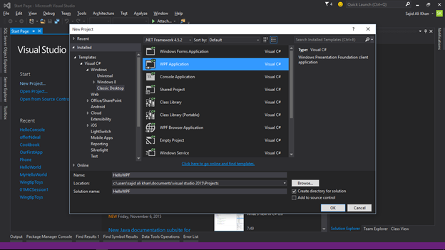
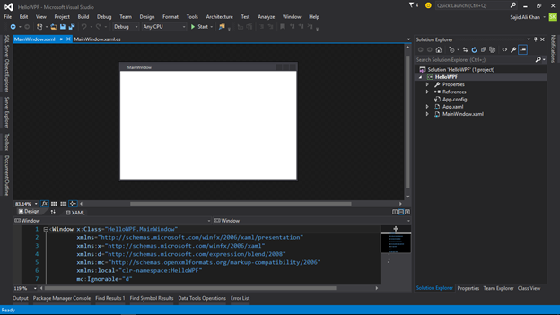
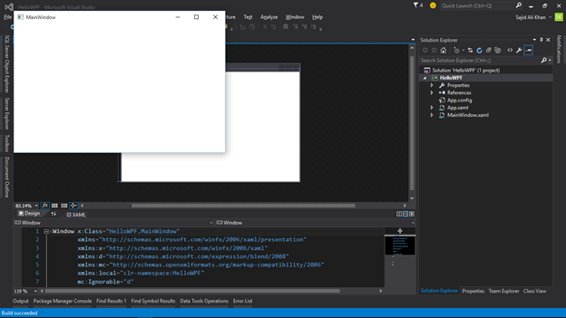
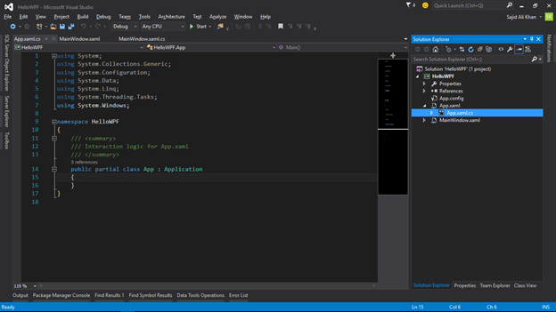
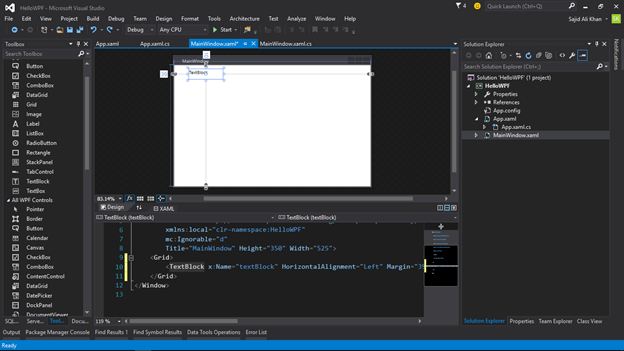
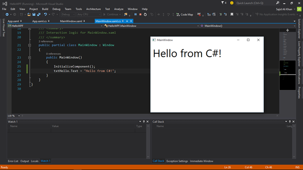

Develop a Windows Desktop Application in C#
Let’s create a Windows Desktop Application in C# using WPF (Windows Presentation Foundation)!
Simply create a WPF Application Project in Microsoft Visual Studio;

When you press OK to create the project. You’ll get a screen like here;

The WPF is little bit interesting. It has visual interface. Its mean to run on the Desktop. And If you run the application, you’ll get the screen like shown below and staying open until you close it down;

:: The WPF Application starts with two files that have extensions of “.xaml”! The XAML is stands for Extensible Application Markup Language (XAML). It is a declarative language. Used to define User Interface. All the Modern Windows 10 UI is based upon XAML.
Microsoft Visual C# always associate with the XAML file or User Interface Definition. C# file stay behind as the Code Behind File with the file extension “.cs”. This is where you put the logic of your application!

Now Back to the XAML file and create a visual control by either Toolbox or by code.
- Create TextBlock by using code or by dragging from Toolbox.

Now to come to the property explorer, you will get everything to customize the text block!
So here at property explorer we change the Text in the common category and change the text property inside the Text category.
Now run the application and you will get the output.

In order to manage the text block control from backend, we need to give it a name in properties.
Now go to logical file, the .cs file on backend shows the C# code where you need to create the logic of your application.
So to affect the appearance of the application, add someone by calling the TextBlock name like here.
txtHello.Text = "Hello from C#!";
And now when we run the application, it will show us output from that;

So as you observed, the value we’re sending from our logical C# code is over riding the value that we set in our XAML code!
So that's how we can write an Application in WPF through Visual C#!